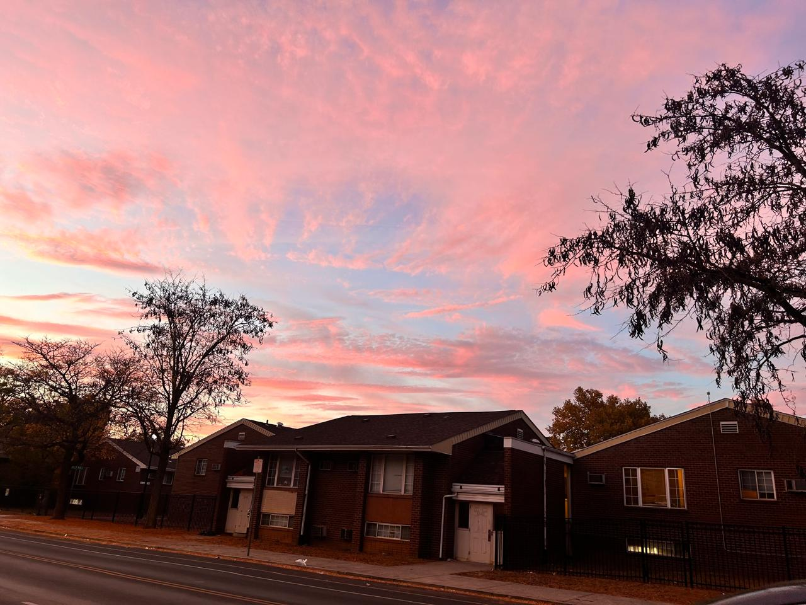
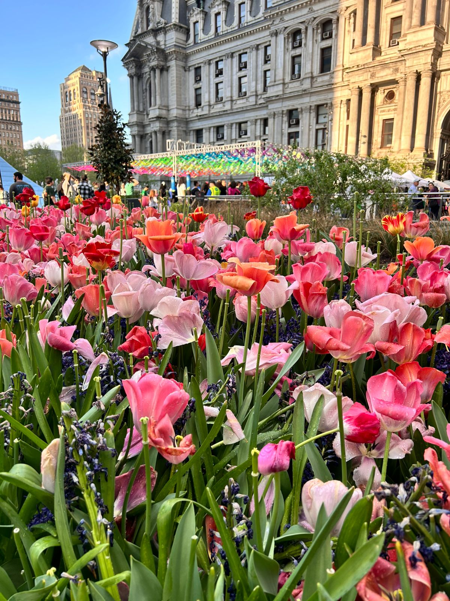
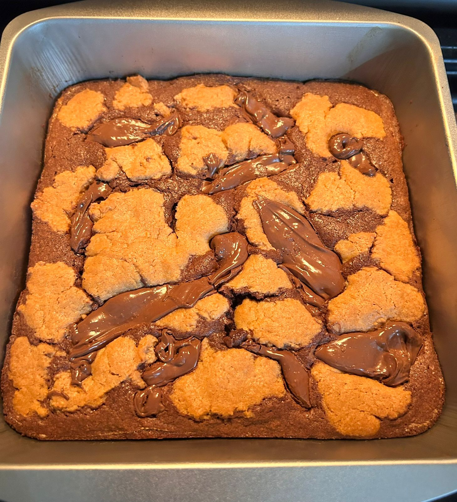
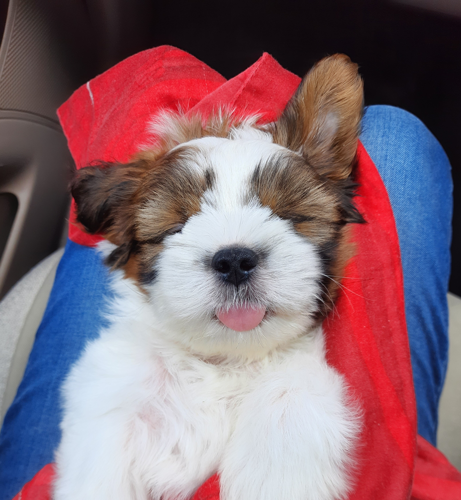
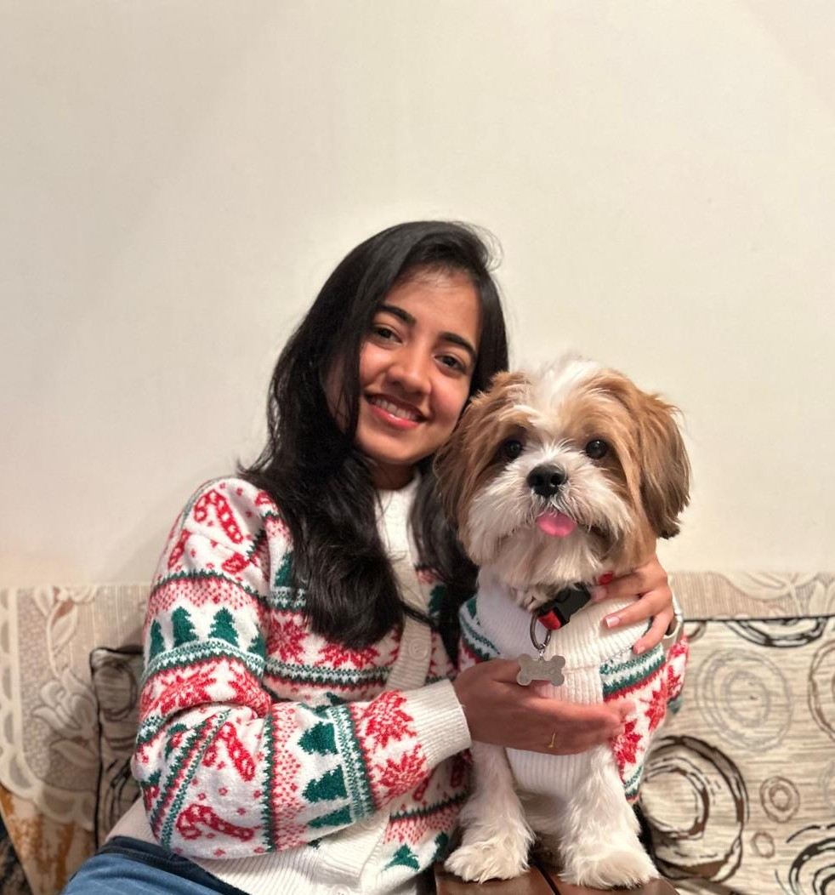
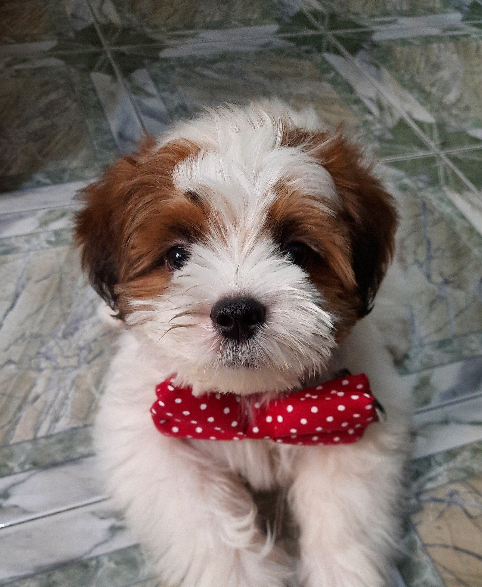

About Me
I am pursuing a Master of Science in Information Systems at Drexel University. My background includes computer science, software development, data analytics, and business intelligence reporting.
I enjoy working with data because it helps organizations identify patterns, make better decisions, and communicate results more clearly. From big tech to small startups, I have always focused on growing while helping others grow within my team. I consider myself a strong team player and leader who enjoys collaborating, supporting teammates, and contributing to shared success.
Throughout my journey, I have worn multiple hats, which has strengthened my adaptability and love for learning new things. Understanding business problems and building strong functional knowledge have helped me grow across both business and technology.
Professional Interests
- Business analytics
- Data analytics
- Information systems
- Web design
- Business intelligence dashboards
- Automation
Personal Interests - Capturing Moments as I Go
Outside of work and academics, I love traveling, listening to music, baking cakes and brownies, and admiring nature and animals. I am not a professional photographer, but I enjoy capturing little moments along the way.



I also have a pet named Pogo, my cutie, who brings so much joy and warmth into my life.


